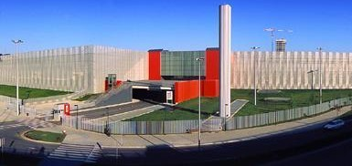

Ubicación y Datos Básicos

BIRTLH ExpoViajes 2025 se celebra en el BEC Bilbao Exhibition Centre, uno de los recintos feriales más modernos y mejor equipados de Europa, ubicado en Barakaldo, en el área metropolitana de Bilbao.
| Información | Detalles |
|---|---|
| Nombre completo | BEC Bilbao Exhibition Centre |
| Dirección | Ronda de Azkue, 1, 48902 Barakaldo, Bizkaia |
| Fecha del evento | Sábado, 18 de octubre de 2025 |
| Horario | 09:00 - 20:00 horas (11 horas de duración) |
| Superficie | 15.000 m² de superficie expositiva |
| Entrada | Gratuita con registro previo |
Calculadora de Entradas
Calcula el coste total de tus entradas para BIRTLH ExpoViajes 2025.
El precio unitario es de 16,50€.
Cómo Llegar - Transporte
Opciones de transporte público:
- Metro: Línea 2 (roja) - Estación "Ansio" (5 minutos a pie)
- Autobús: Líneas A3247, A3248 y A3249 desde Bilbao centro
- Tren: Cercanías RENFE - Estación "Barakaldo" (10 minutos en autobús)
- Tranvía: Euskotren - Conexión con metro en "San Inazio"
Transporte privado:
- Desde Bilbao centro: A-8 dirección Santander, salida 12 "Barakaldo"
- Desde San Sebastián: A-8 dirección Bilbao, salida 12 "Barakaldo"
- Desde Vitoria: A-68 hasta A-8, salida 12 "Barakaldo"
- Aparcamiento: 3.000 plazas gratuitas en el recinto
Para planificar tu viaje en transporte público, consulta Metro Bilbao y Bizkaibus.